Биография
- 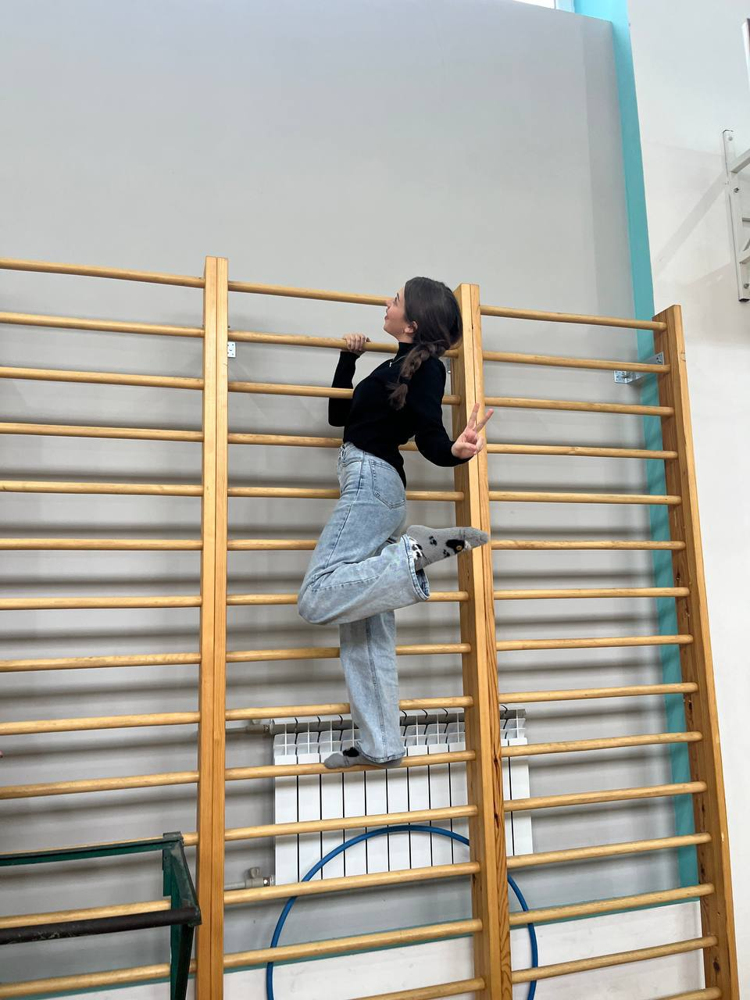
- Мария
- 14 лет
Факты
-
Ну тут все понятно
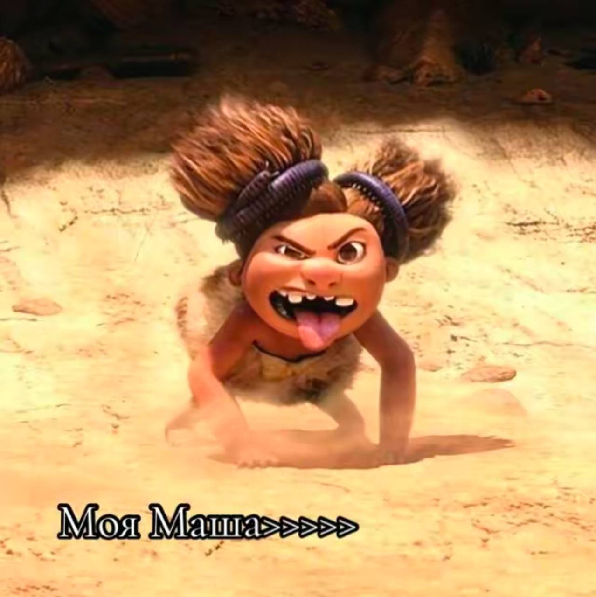 -
Спорт которому Маша скажет да
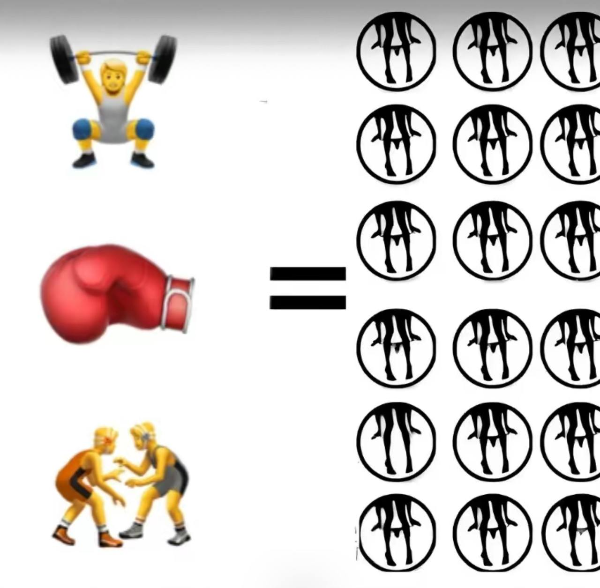 -
Если вы так не пишете так, то кто вы?
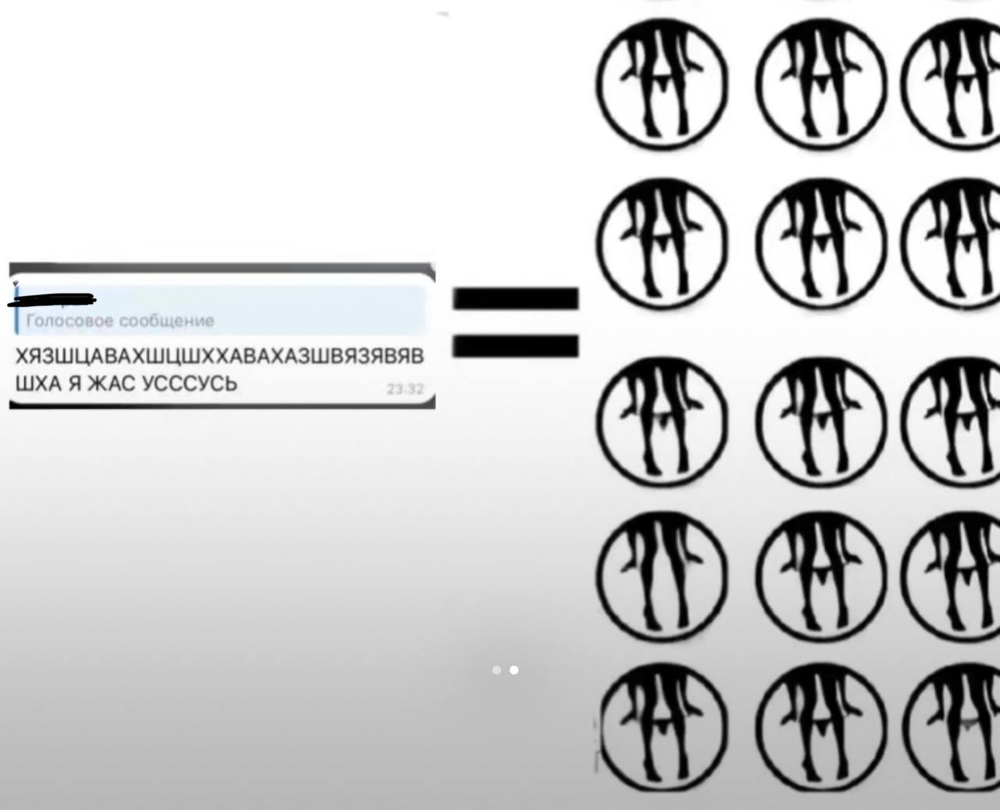 -
Думаю тут не надо лишних коментариев
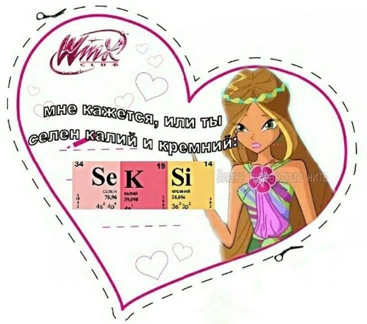 -
Думаю это будет не надолго и мы скоро увидимся
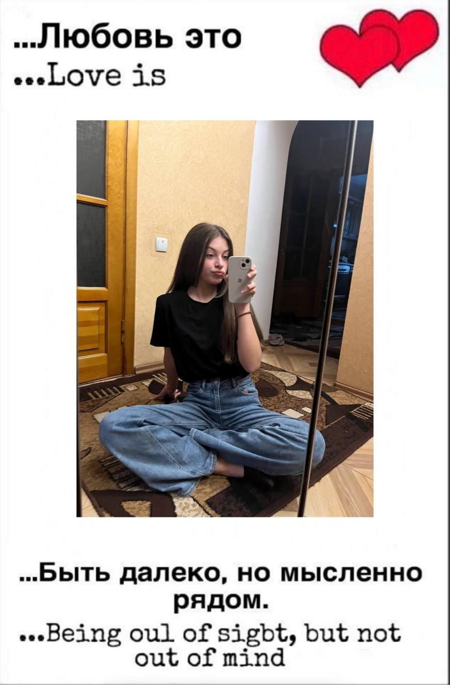
Цытаты(из репостов)
-
1 Не учу историю,, потому что не живу прошлым
-
2 Чум старше я становлюсь тем лучше понимаю Бабу Ягу которая жила сама в лесу и сажала в печь всех кто ее бесил
Песни(из репостов)
-
тюльпан
Я убил для тебя тюльпан
Я украл у земли тюльпан
Намотал резиновый пучок
Так для кого же кровь его течёт?
(Течёт) (Oh-oh-oh) -
Северное сияние
Ты так и не видела как я люблю тебя!
(или со мной что-то не то)
Ты была влюблена тупо в свои дела
(вот оно что значит любовь)
Как я люблю тебя, ты не заметила!
Вот оно что значит любовь!
Вот оно что значит любовь -
Vlone
Я не буду тебя обнимать, целовать
Снова брать, за руку таскать, называть невестой
Я не буду скрывать, я могу забрать
Не отдать, утащить опять твоё сердце
Vlone, Vlone, Vlone, Vlone, Vlone, Vlone -
Целовать другого
Как там ты? Как там мы?
Сверху видно лучше, как на ладони наши души. -
Будапешт
Наверное ты еще не привыкла
Еще целовать другого
Как получить внимание Марии (тутор)
- 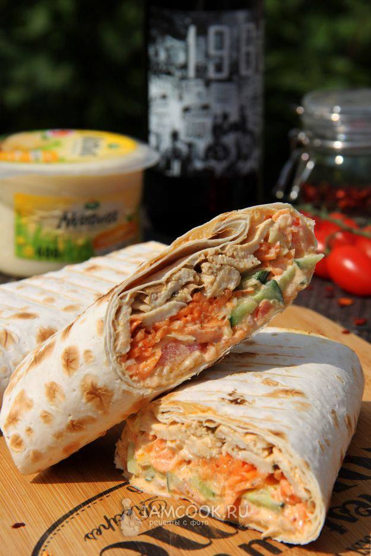
- 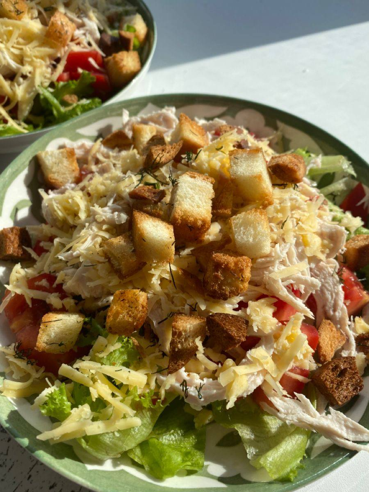
-

-
Чтоб ее инстаграм выглядил так

-
Подарить ей букет тюльпанов
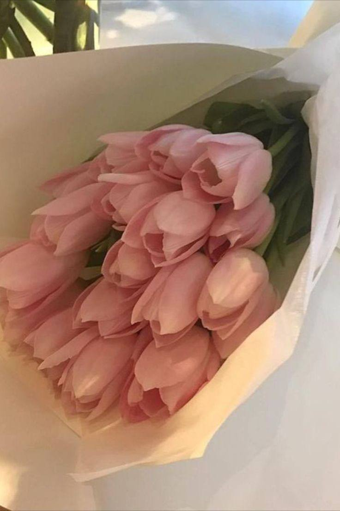 -
Подарить ей букет тюльпанов только белых
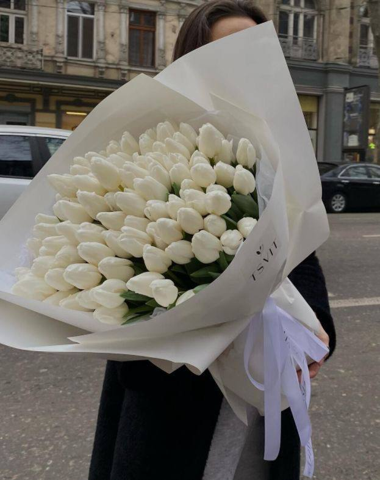
Первое это еда
Второе это
Воспоминания
-
Наши с тобой переписки в такие моменты>>>
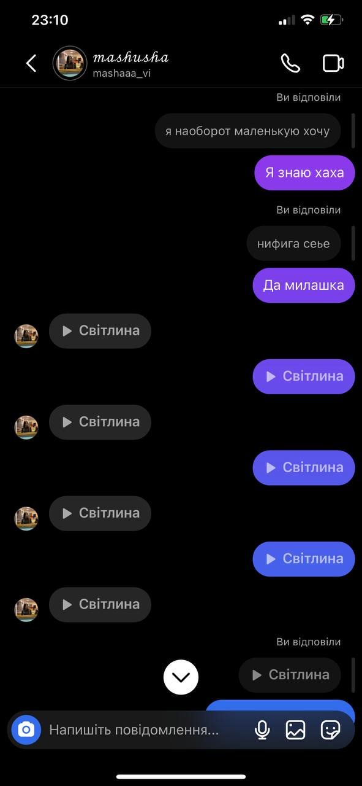 - 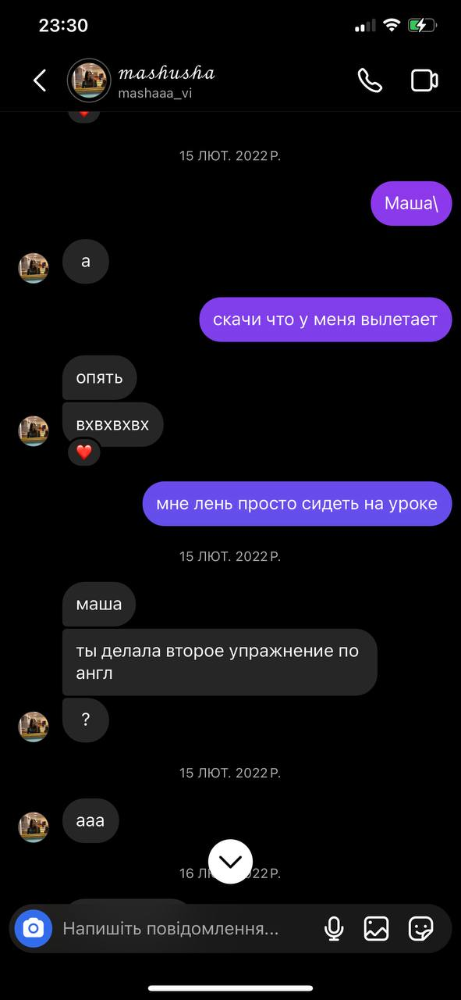
Стомотология
-
Когда-то ты написала мне это
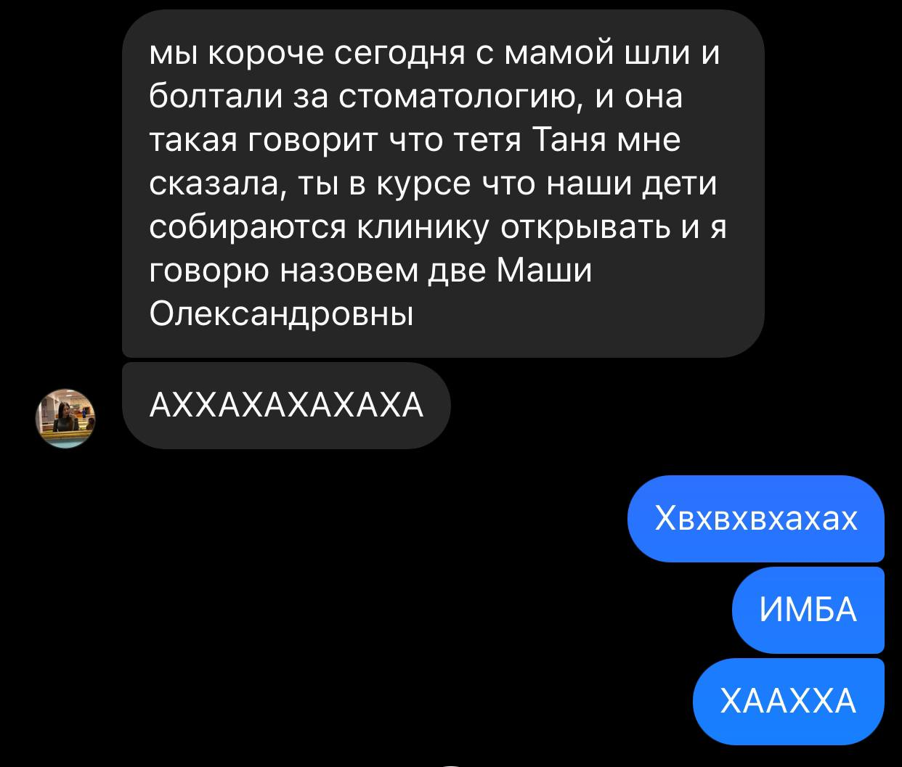К сожелению это сообщение так и останиться ведь я не пойду в эту професию но я подготовила пару варианто для твоей клиники
-
Логототип
я попыталась сделать их красиво и в твоих любимых цветах. Также хотела высловить свои восхищение в твой адрес ведь ты большая молодец что стремишься к этой професии.